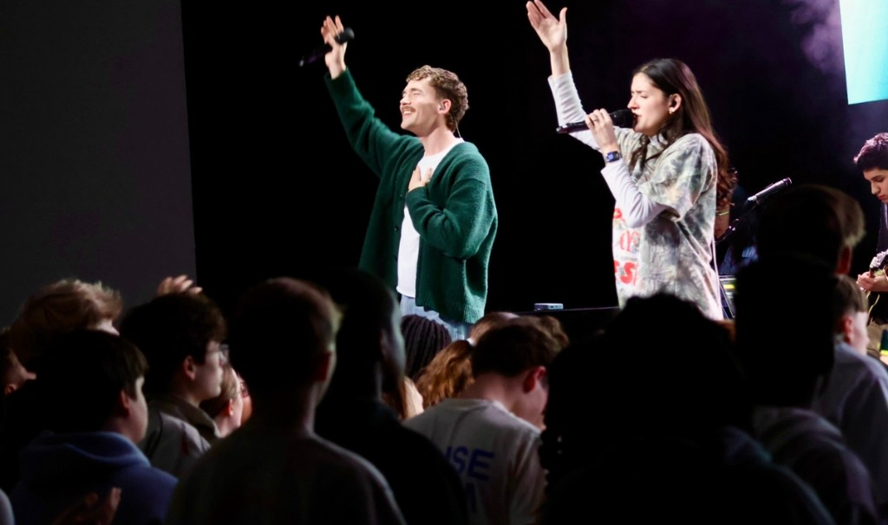

Faith
Faith is first for me. God has provided every opportunity for me to get here and has sustained me through every challenge along the way. My faith in Christ guides me, is the source of my peace, and gives me purpose.
Romans 12:1-2 MSG: "So here's what I want you to do, God helping you: Take your everyday, ordinary life-your sleeping, eating. Going-to-work and walking-around life can be placed before God as an offering. Embracing what God does for you is the best thing you can do for him. Do not become so adjusted to your culture that you fit into it without thinking. Instead, fix your attention on God. You will be changed from the inside out. Readily recognize what he wants from you, and quickly respond to it. Unlike the culture around you, always dragging you down. God brings the best out of you and develops well-formed maturity in you."